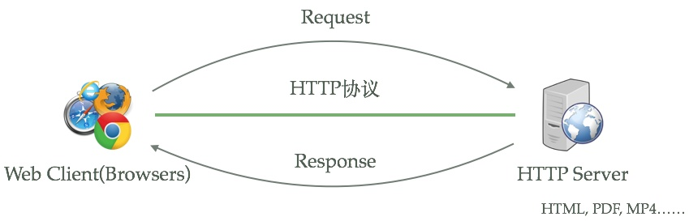
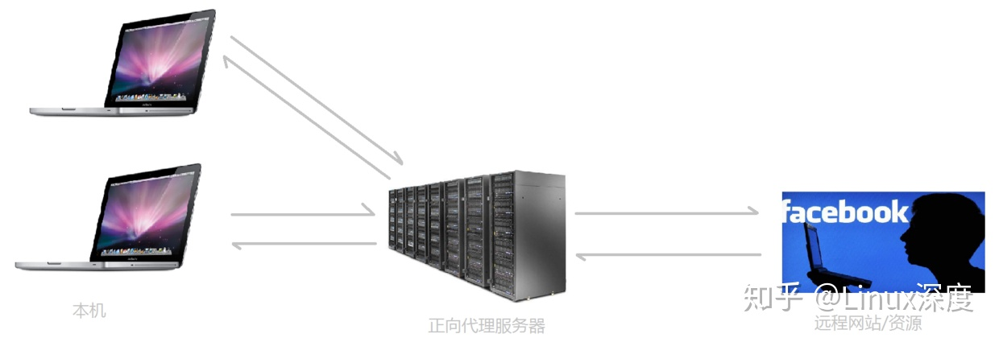
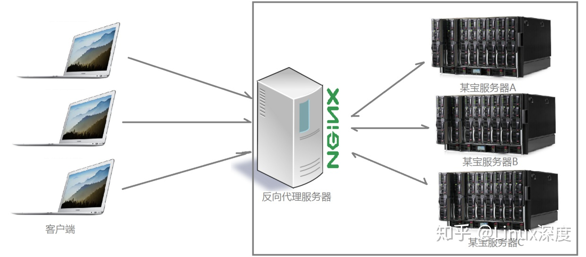

web server开发之nginx
概述
本篇开始，我们详细了解下Web Server（通常也代表http server），以及我们经常看到的，入nginx, tomcat, apache都是什么，都在什么场景下使用。
HTTP 服务的本质
HTTP服务器本质上也是一种应用程序——它通常运行在服务器之上，绑定服务器的IP地址并监听某一个tcp端口来接收并处理HTTP请求，这样客户端（一般来说是IE, Firefox，Chrome这样的浏览器）就能够通过HTTP协议来获取服务器上的网页（HTML格式）、文档（PDF格式）、音频（MP4格式）、视频（MOV格式）等等资源。下图描述的就是这一过程

不同的语言都有相关类库可以实现简单的HTTP 服务，如 NodeJs , Python, Java等，它们都能够通过绑定IP地址并监听tcp端口来提供HTTP服务。
Ngixn
Nginx是一款免费开源的高性能 HTTP 代理服务器及反向代理服务器（Reverse Proxy）产品，同时它还可以提供 IMAP/POP3 邮件代理服务等功能。他是由俄罗斯人Igor Sysoev设计开发的，开发工作从2002年开始，第一次公开发布在2004年10月4日。
特点：
- 使用基于事件驱动架构，性能优秀，支持数以百万级别的 TCP 连接
- 完全开源，第三方模块层出不穷（这是个开源的时代啊）
- 跨平台，支持几乎所有常见操作系统
安装
使用yum进行安装（也可以使用源码编译安装，方法自行百度）
yum install nginx
常用操作：
service nginx start # 启动Nginx服务
service nginx stop # 停止Nginx服务
service nginx restart # 重启Nginx服务
service nginx status # 查看Nginx运行状态
nginx -s reload # 服务运行中重新加载配置
nginx -s reopen #重启Nginx
nginx -s reload #重新加载Nginx配置文件，然后以优雅的方式重启Nginx
nginx -s stop #强制停止Nginx服务
nginx -s quit #优雅地停止Nginx服务（即处理完所有请求后再停止服务）
nginx -?,-h #打开帮助信息
nginx -v #显示版本信息并退出
nginx -V #显示版本和配置选项信息，然后退出
nginx -t #检测配置文件是否有语法错误，然后退出
nginx -T #检测配置文件是否有语法错误，转储并退出
nginx -q #在检测配置文件期间屏蔽非错误信息
nginx -p prefix #设置前缀路径(默认是:/usr/share/nginx/)nginx -c filename #设置配置文件(默认是:/etc/nginx/nginx.conf)
nginx -g directives #设置配置文件外的全局指令
killall nginx #杀死所有nginx进程
使用
正向代理
平常使用FQ软件访问Google，Facebook时的过程就是正常代理：客户端请求代理服务器（节点）去访问目标站点，代理服务器将请求到的内容返给客户端。
正向代理最大的特点是客户端非常明确要访问的服务器地址；服务器只清楚请求来自哪个代理服务器，而不清楚来自哪个具体的客户端；正向代理模式屏蔽或者隐藏了真实客户端信息

Webpack-dev-server的proxy用法就属于正向代理模式。
反向代理
多个客户端给服务器发送的请求，nginx服务器接收到之后，按照一定的规则分发给了后端的业务处理服务器进行处理了。此时请求的来源也就是客户端是明确的，但是请求具体由哪台服务器处理的并不明确了，nginx扮演的就是一个反向代理角色

一个更通俗的例子就是拨打10086客服，客服总台会将闲置的客服转接给你，客服总台扮演的就是一个反向代理角色。
下面要讲到的负载均衡也是一个反向代理模式。
负载均衡
将一个应用部署在多台服务器上时，就需要将用户请求进行合理分配，分配到不同的机器进行运行，同时也能保证万一有服务器宕机，其他服务器还可以正常运行，就不会影响用户使用。
Nginx可以通过反向代理来实现负载均衡：
upstream myweb {
server 192.168.0.111:8080; # 应用服务器1
server 192.168.0.112:8080; # 应用服务器2
}
server {
listen 80;
location / {
proxy_pass http://myweb;
}
}
虚拟主机
对于多个服务部署在一台机器上的时候，我们也可以使用nginx配置虚拟主机，用户通过不同的域名打开不同的服务，就像在访问不同的服务器，
譬如，将www.a.com 代理到本地3000端口，将admin.a.com 代理到本地4000端口（需要确保两个域名都能解析到同一台机器上）
server {
listen 80;
server_name www.a.com;
location / {
proxy_pass http://localhost:4001; # 对应端口号4001
}
}
server {
listen 80;
server_name admin.a.com;
location / {
proxy_pass http://localhost:4002; # 对应端口号4002
}
}
本人的主站就是通过这种方式进行部署(ps:如果该端口已经被其他服务占用，启动nginx会报错)
Apache & Tomcat
Apache，全称为：Apache HTTP Server Project，是Apache软件基金会下的一个项目；由于其跨平台和安全性被广泛使用，是最流行的Web服务器端软件。上世纪就已经开始作为HTTP服务开始大规模运行了。
Tomcat是应用（Java）服务器，它只是一个Servlet(JSP也翻译成Servlet)容器，可以认为是Apache的扩展，但是可以独立于Apache运行。
Nginx VS Apache
- Nginx 配置简洁, Apache 复杂；
- Nginx 静态处理性能比 Apache 高 3倍以上；
- Apache 对 PHP 支持比较简单，Nginx 需要配合其他后端用；
- Apache 的组件比 Nginx 多；
- Apache是同步多进程模型，一个连接对应一个进程；nginx是异步的，多个连接（万级别）可以对应一个进程；
- Nginx处理静态文件好,耗费内存少；动态请求由apache去做，nginx只适合静态和反向；
- Nginx适合做前端服务器，负载性能很好；
- Nginx本身就是一个反向代理服务器 ，且支持负载均衡
补充：开源许可证